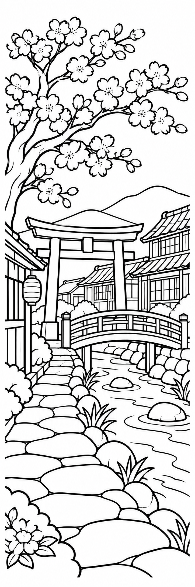
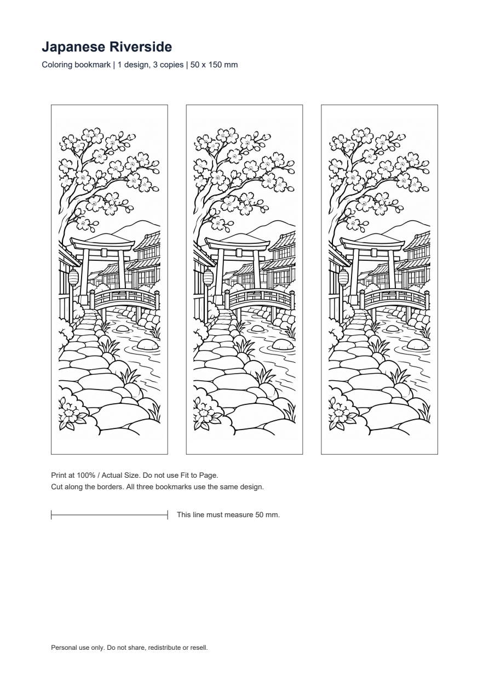
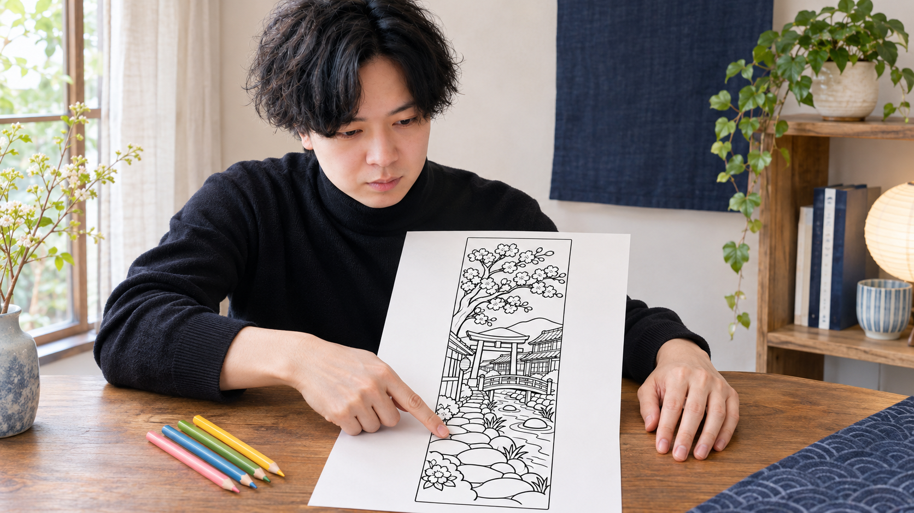
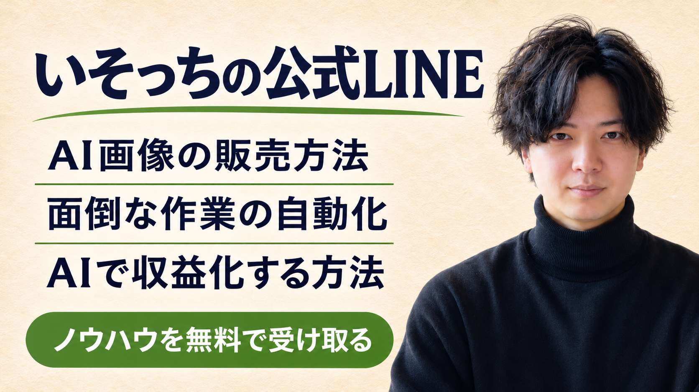

この1枚を商品に。
桜・鳥居・小川。日本らしい風景を、海外向けの塗り絵しおりに。線画から英語の商品文、出品前の準備まで、この作例で進めます。


1条件を決めて、送る。
「稼げる方法教えて」だと、まともな答えは返ってきません。
僕がお勧めするのは、AI×塗り絵しおり販売。チャッピーには、相手・商品・絵柄まで具体的に渡そう。
鳥居・瓦屋根・桜
空・川・石畳
縦横比1:3・文字なし
ChatGPTの画像生成を使えるチャットで、下の全文を送ります。画像が出たら保存。気になる場所は、画像を添えて具体的に直そう。
線画を作るプロンプトを開く
画像を1枚作ってください。 商品：日本の風景をテーマにした、大人向けの塗り絵しおり。 買う人：日本の街並みや風景が好きで、自宅で印刷して塗りたい英語圏の人。 サイズ：縦横比1:3。仕上がり50×150mmに配置します。 絵柄：桜の枝、木の鳥居、小さな橋、小川、瓦屋根の木造の家が見える、日本の川沿いの風景。特定の実在施設の再現ではありません。 表現：白地に黒い輪郭線だけ。影、グレー、黒いベタ塗りなし。大人が塗りやすい大きな余白と、適度な細部を両立。線と形をつなげ、鳥居・橋・家の構造を自然に。 文字・ロゴ・透かし・人物・キャラクターは入れない。 絵の周囲に7%程度の安全余白。背景のある商品写真ではなく、印刷用の線画そのものを出力してください。
部分を直すプロンプトを開く
この画像を修正してください。 【修正箇所】鳥居／橋／塗りつぶされた部分／細かすぎる部分（該当箇所だけ残す） 【直したい内容】ここに「橋の欄干の線をつなぐ」など具体的に記入。 構図、絵柄、縦横比1:3は維持。白地に黒の輪郭線のみ。文字・影・グレーは追加しない。 修正後は画像全体をもう一度出力してください。

日本好きな外国人に向けるなら、ただの模様より、見て分かる日本の風景。今回は鳥居と桜、小川を選びました。
画像ができた後の確認と、PDFへの保存
- 画像を拡大し、鳥居・橋・家の形、途中で切れた線、不要な文字、黒い塗りつぶしを確認。直す箇所を指して修正します。
- 画像を端末へダウンロード。この作例は下の印刷PDFをそのまま開けます。
- 自分の絵柄へ変えるときは、画像を添えて「この画像を50×150mmの枠に収め、同じ絵柄を3枚ずつA4とUS Letterに配置。枠線・50mmの確認線を付けた印刷PDFを2つ作って」と依頼。ファイル作成が使えない場合は、文書やレイアウトソフトで同じ寸法に配置しPDF保存します。
- PDFを保存して開き、ページの大きさと、絵柄が枠に収まるか確認。100%／実際のサイズで試し刷りし、確認線が50mmか測ります。「用紙に合わせる」は使いません。
作例は特定の実在施設を写したものではありません。自分で撮った写真を参考にするなら、使用できる写真を添え、看板・人物等を除いて線画化する指示を足します。
1デザイン・各1ページ。同じしおり3枚／仕上がり50×150mm。まず1枚印刷して、塗れるか確かめよう。
2英語文も、作らせる。
画像だけ作って終わりにしない。何が届くのかまでチャッピーに渡すと、商品名と説明文もまとめて作れます。
DescriptionThis is a digital download. No physical item will be shipped.
英語文のプロンプトを開く
添付の線画と次の商品仕様に合わせて、Etsy向け英語の商品名・説明文・検索タグ案を作ってください。 商品：桜・鳥居・小川を描いた塗り絵しおり、1デザイン。 購入者：日本の風景が好きで、自宅で印刷して塗りたい人。 納品：Japanese_Riverside_A4.pdf、Japanese_Riverside_Letter.pdf、Printing_Instructions.txtの3ファイル。 各PDFは1ページ。同じ50×150mmのしおりを3枚並べる。3種類の絵柄ではありません。 内容：白黒線画。色つきの完成品や実物は届きません。100%／実際のサイズで印刷して切り取り、塗ります。 AI生成画像を使用し、人が構図・線・商品データを確認したことを説明文に明示。 用途：購入者本人の個人利用。データの共有・再配布・再販売は不可。 出力：Title、Description、Tagsの3区分。Titleは140文字以内で簡潔に。タグは13個以内、各20文字以内。 書かれていない実績、効能、レビュー、売上、売れやすさ、品質保証は足さない。写真にない要素を記載しない。 最後に、仕様と英文の不一致があれば日本語で指摘してください。
この作例の英語商品文・タグ全文を見る
TITLE Japanese Riverside Coloring Bookmark | Printable PDF, Sakura & Torii Gate DESCRIPTION Color a quiet Japanese riverside scene, with cherry blossoms, a torii gate, a small bridge and wooden houses. This is a digital download. No physical item will be shipped. WHAT YOU RECEIVE - Japanese_Riverside_A4.pdf: one A4 page with three copies of one bookmark design. - Japanese_Riverside_Letter.pdf: one US Letter page with three copies of the same design. - Printing_Instructions.txt: printing and use instructions. Each bookmark measures 50 x 150 mm (approximately 1.97 x 5.91 inches). The artwork is black-and-white line art for you to color. Three copies are included on each sheet, not three different designs. HOW TO USE Download the files. Open the PDF for your paper size. Print at 100% or Actual Size, not Fit to Page. Check the 50 mm calibration line, cut along the bookmark borders, and color with your preferred pencils. Paper, printer, scissors and pencils are not included. AI DISCLOSURE This artwork was created with the help of an AI image generator and reviewed and arranged into printable files by a human. TERMS OF USE For personal use only. Do not share, redistribute or resell the digital files or artwork. Printed colors and line appearance can vary depending on your printer, settings and paper. TAGS (candidate tags, review before publishing) coloring bookmark, japan printable, sakura coloring, torii gate art, printable bookmark, adult coloring, riverside art, pdf bookmark, japanese scenery, cherry blossom, digital download, book lover craft, color your bookmarkテキストでも保存
「3枚」と「3種類」は別です。PDFの中身と英文を照合して、AIを使ったことも説明文に残そう。
3揃えたデータを、Etsyへ。
PCでショップを用意したら、Shop Manager → Listings → Add a listing。商品タイプは「Digital files」を選びます。
印刷案内TXT→Digital files
Renewal options
上は実際の管理画面ではなく、入れるものの対応図です。購入者用ファイルは3つ。教材ZIPやプロンプトを商品ファイルに入れないように。
出品までの手順・初めて使う場合の条件
- 未開店ならPCブラウザでEtsyのショップ開設へ。国・言語・通貨・ショップ名・本人確認・受取／支払設定を進めます。日本の受取設定ではPayoneer連携が案内されます。表示された開設費等を確認してから進めてください。
- 「Add a listing」で商品タイプをDigital filesに。カテゴリはしおりのデジタル商品に合う候補を、実画面で確認して選びます。
- 見本画像を載せ、英語商品文を該当欄へ入力。AI利用の説明を残し、ファイルが届く商品であることを明記します。
- Digital filesへA4・LetterのPDFと印刷案内TXTを添付。デジタル商品は最大5ファイル、各20MBまでです。
- 価格・数量・タグ・制作情報・更新方法等の必須項目を設定。価格は台本の例に固定せず、手数料と購入者に渡す内容から決めます。
- まずSave as Draftで保存し、見本・英文・添付ファイルを再確認。公開する場合は、料金と内容を自分で確認してからPublishへ進みます。
出品手数料は1件0.20米ドル、取引手数料は6.5%。決済処理・為替・広告・税等の追加費用は条件により異なります。売上と手元に残る利益は分けて考えよう。
寝る前の指示を決める。
僕はこの手順をチャッピーで自動化して、毎晩寝る前に指示してます。まず試すなら、題材案と英語文の下書きから。
- 「予約前に1回試す指示」を、まず通常のチャットで送る。
- 出力を確認できたら、予約用の全文を送る。時刻は毎晩22:30・日本時間の例です。自分の時間に変えてね。
- Scheduledで、次の実行日時と保存された指示を確認。翌朝に実行結果を開き、最初の数回は必ず読み直します。
予約前に1回試す指示を開く
次の商品仕様を使って、今、下書きを1セット作ってください。予約は作成しないでください。 対象：日本の風景が好きな英語圏の人向けの、印刷できる塗り絵しおり。 仕様：1デザイン、50×150mm。A4とUS LetterのPDF各1ページに同じしおりを3枚ずつ配置。個人利用。実物の発送なし。 毎回の出力： 1. 題材案を3つ。日本らしい風景の要素と、塗れる余白の取り方を各1文。 2. そのうち1案を選び、縦横比1:3・白地に黒線・文字なしの画像生成プロンプトを作成。 3. 選んだ案の商品名と英語説明文の下書き。実物・実ファイルの完成前なので、未確認の内容は「要確認」と分ける。 4. 朝に人が確認する項目を3つ。 販売実績やレビューは作らない。外部サービスへのログイン、出品、公開、購入、課金、送信はしない。 出力後、仕様と下書きの間で人が確認すべき点を表示してください。
夜に任せる予約タスクの指示を開く
このチャットで確認した商品仕様を使い、毎晩22:30（Asia/Tokyo）に次の下書きを1セット作る予約タスクを作成してください。 対象：日本の風景が好きな英語圏の人向けの、印刷できる塗り絵しおり。 仕様：1デザイン、50×150mm。A4とUS LetterのPDF各1ページに同じしおりを3枚ずつ配置。個人利用。実物の発送なし。 毎回の出力： 1. 題材案を3つ。日本らしい風景の要素と、塗れる余白の取り方を各1文。 2. そのうち1案を選び、縦横比1:3・白地に黒線・文字なしの画像生成プロンプトを作成。 3. 選んだ案の商品名と英語説明文の下書き。実物・実ファイルの完成前なので、未確認の内容は「要確認」と分ける。 4. 朝に人が確認する項目を3つ。 販売実績やレビューは作らない。外部サービスへのログイン、出品、公開、購入、課金、送信はしない。 タスク作成後、時刻とタイムゾーン、次回実行日時、保存された指示を表示してください。 この環境で予約できなければ、予約したと言わず、同じ指示を手動で実行するための文を返してください。
予約できないとき／自動化する範囲
利用可否はプラン・アプリ・設定で異なります。「予約した」という返答だけで判断せず、Scheduledで確認してください。使えなければ、同じ指示を寝る前に手動で送れます。
この指示が予約するのは下書き作成です。画像生成やPDF化まで任せる場合は、そのチャットで必要なツールが使え、予約実行でも同じ出力を得られるかを別途試します。手元のフォルダがクラウドから自動で読める前提にはしません。
画像の採否、印刷確認、価格、公開は人が判断。外部へのログイン・出品・公開・課金は指示に含めていません。
あとで作るなら、一式を保存。
ページとプロンプト、同じ作例の印刷PDF・英語商品文をまとめました。
保存キットをダウンロードZIPを展開し、guide.htmlをブラウザで開きます。印刷PDFはdownloads内。画像と案内が揃ったままオフラインでも読めます。
キットの中身と、最初の一手
- guide.html＋assets：この特典本体
- 01〜05のTXT：画像生成・修正・英語文・夜の予約・手動確認用プロンプト
- A4／US Letterの印刷PDF・Printing_Instructions.txt
- English_Listing.txt：この作例の英語商品名・説明・タグ
まずはA4のPDFを1枚印刷してみてね。次に、プロンプトの絵柄を自分で選び直して、1商品を通して作ろう。
販売と自動化をつなぐ。
しおりのデータができたら、どう販売するか、どの作業を任せるか。AI画像の販売方法・面倒な作業の自動化・AIで収益化する方法のノウハウは、僕の公式LINEで無料で受け取れます。

いそっちの公式LINEへ